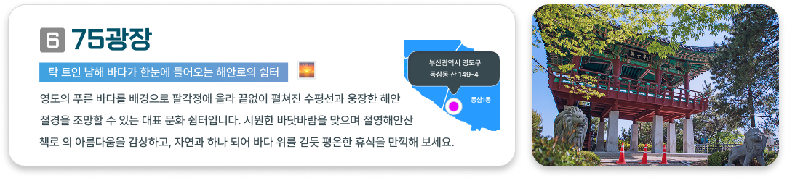
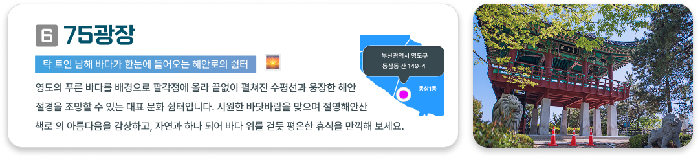
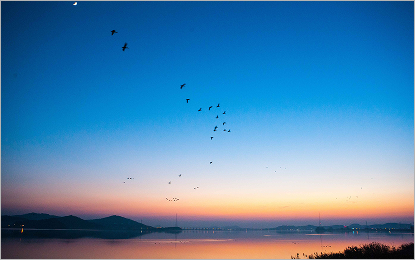
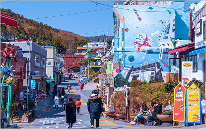
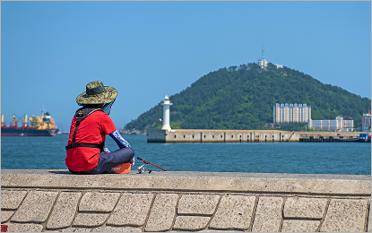
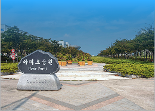
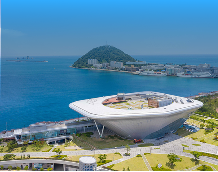
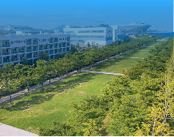
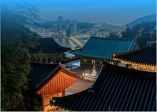
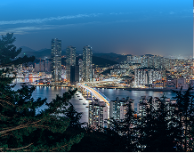

부서지는 파도 사이 아름다운 푸른 섬

16.1℃

영도의 유명 관광지 뿐만 아니라
지역 크리에이터의 추천 스팟을 한 번에 !
영도 느끼기
바다 내음 가득한 해녀의 손맛으로 즐기는 신선한 성게알, 중리 해녀촌 🐚 영도가 품은 달콤하고 포슬포슬한 역사의 맛, 조내기 고구마 디저트 🍠 절벽 위 굽이치는 골목과 동화 같은 바다 파노라마, 흰여울문화마을 🏠 보석 같은 불빛의 바다와 화려하게 일렁이는 도심의 밤, 청학 전망대 ✨ ☕ 바다 내음 가득한 해녀의 손맛으로 즐기는 신선한 성게알, 중리 해녀촌 🐚 영도가 품은 달콤하고 포슬포슬한 역사의 맛, 조내기 고구마 디저트 🍠 절벽 위 굽이치는 골목과 동화 같은 바다 파노라마, 흰여울문화마을 🏠 보석 같은 불빛의 바다와 화려하게 일렁이는 도심의 밤, 청학 전망대 ✨ ☕


영도 8경 알아보기 🔭
 

영도 로컬 PICK 🛸
남항동
895개
봉래동
724개
영선동
3,622개
청학동
2,845개
동삼1동
1,210개
동삼2동
1,635개
현재 인기 스팟 💫
-
중리 노을산책로
바다 위를 걷듯 펼쳐지는 영도의 노을 🌅
2025.09.15 / dos4652 님
#인생샷 #골목감성 #영도노을
로컬 크리에이터 dsfj12 님의 리뷰 / 30대
퇴근 후 복잡한 생각 비우기 딱 좋은 곳. 파도 소리 들으며 물멍하면 힘이 나요.
🌊 물멍 점수 ★★★★★ 🚗 편의성 ★★★★☆로컬 크리에이터 85safd 님의 리뷰 / 40대
화려한 관광지보다 이곳의 낙조가 더 깊은 울림을 주네요. 비워낼수록 채워지는 여유가 좋습니다.
☕ 여유 점수 ★★★★★ 👟 산책 난이도 (편함)로컬 크리에이터 bada88 님의 리뷰 / 50대
뜨거웠던 낮의 해가 차분하게 몸을 낮추는 법을 가르쳐주는 길. 가족과 함께 걷기 참 좋네요.
🌅 경관 점수 ★★★★★ 🦀 맛집 점수 ★★★★★ -
봉산마을 마실길
골목 사이를 걷듯 전해지는 마을의 온기 💘
2025.10.22 / 99vodlsc 님
#마을산책 #빈집공방 #루프탑전망
로컬 크리에이터 asd2 님의 리뷰 / 20대
빈집들이 갤러리나 공방으로 변한 게 너무 힙해요! 특히 루프탑에서 보는 부산항 뷰는 사람도 적어서 완벽해요.
📸 사진 점수 ★★★★★ ⭐ 힙 지수 ★★★★★로컬 크리에이터 fdsc82 님의 리뷰 / 30대
미로 같은 골목을 탐험하는 재미가 쏠쏠해요. 작고 귀여운 공방들을 구경하다 보면 시간 가는 줄 모릅니다.
🤫 비밀 보장 ★★★★★ 🚶 골목 탐험 ★★★★☆로컬 크리에이터 sa7415 님의 리뷰 / 40대
마을 곳곳에 스며든 예술적 감성이 다정해요. 소박한 정취를 느끼며 천천히 걷기 이보다 좋을 수 없죠.
감성 충전 ★★★★★ 👟 산책 난이도 (편함)로컬 크리에이터 joi85 님의 리뷰 / 50대
조선소 사람들의 삶이 묻어있는 터라 정겨워요. 마을 광장이 주는 편안함에 마음까지 넉넉해지는 길입니다.
🖼️ 마을 정취 ★★★★★ 💪 활력 지수 ★★★★★ -
미창석유 신방파제
세월을 걷듯 묵직하게 남은 영도의 흔적 🛳️
2026.01.20 / 53asdf 님
#이색야경 #낚시명당 #로컬맛집
로컬 크리에이터 ehdlcl54 님의 리뷰 / 20대
거대 조선소 크레인을 배경으로 던지는 캐스팅! 다른 곳에선 볼 수 없는 압도적인 야경 낚시 포인트입니다
📸 사진 점수 ★★★★★ 🚢 항만감성 ★★★★★로컬 크리에이터 eidm22 님의 리뷰 / 30대
낚시 좀 한다 하는 남자들은 다 여기 모이죠. 학꽁치 떼 들어올 때 손맛은 물론, 밤새 원투 던지기 최고입니다.
🌅 경관 점수 ★★★★★ 🎣 손맛점수 ★★★★★로컬 크리에이터 85safd 님의 리뷰 / 40대
화려한 불빛보다 조선소의 실루엣이 주는 중후함이 좋습니다. 묵직한 바닷바람 맞으며 걷기 이보다 좋을 수 없어요.
⚓ 로컬정취 ★★★★★ 💪 활력지수 ★★★★★로컬 크리에이터 skRtdk24 님의 리뷰 / 50대
영도 신방파제는 역시 조과가 확실합니다. 전갱이랑 고등어 손맛 좀 보고 나면 일주일 피로가 싹 가십니다.
🐟 조과지수 ★★★★★ 🥘 노포감성 ★★★★★
-
중리 노을산책로
바다 위에 펼쳐진 초록빛 쉼터 🌿
탁 트인 바다와 넓은 잔디밭이 만나는 이곳은 영도 최고의 피크닉 명소예요. 아이들은 광장에서 뛰놀고 우리는 바다 구경하며 걷기만 해도 ...2025.09.15 / dos4652 님
2025.09.15 / dos4652 님
2025.09.15 / dos4652 님
로컬 크리에이터 bada88 님의 리뷰 / 50대
가족들과 도시락 싸 들고 소풍 오기 참 좋습니다. 해양박물관 구경하고 나와서 바닷바람 맞으며 걷다 보면 막혔던 가슴이 뻥 뚫리는 기분입니다.
🌅 경관 점수 ★★★★★ 🦀 맛집 점수 ★★★★★ -
복천사
구름 위를 걷듯 평온한 마음의 휴식 🙏
탁 트인 바다와 넓은 잔디밭이 만나는 이곳은 영도 최고의 피크닉 명소예요. 아이들은 광장에서 뛰놀고 우리는 바다 구경하며 걷기만 해도 ...2025.09.05 / dos4652 님
2025.10.11 / dos4652 님
2025.11.25 / romii22 님
로컬 크리에이터 bada88 님의 리뷰 / 50대
절 특유의 고즈넉함과 탁 트인 전경이 일품입니다. 은은한 풍경 소리 들으며 야경을 즐기다 보면 마음이 절로 평온해지는 진짜 휴식처입니다.
🌅 경관 점수 ★★★★★ 🚗 편의성 ★★★★★
로컬 크리에이터 asd2 님의 리뷰 / 20대
해가 지고 나면 은은한 조명이 켜져 밤바다를 보며 걷기에도 안전하고 낭만적이에요.
📸 사진 점수 ★★★★★ ⭐ 힙 지수 ★★★★☆